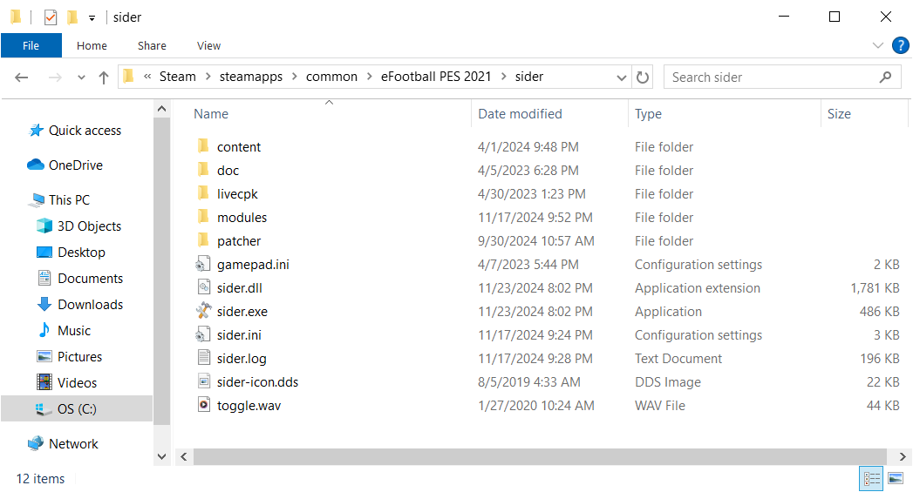
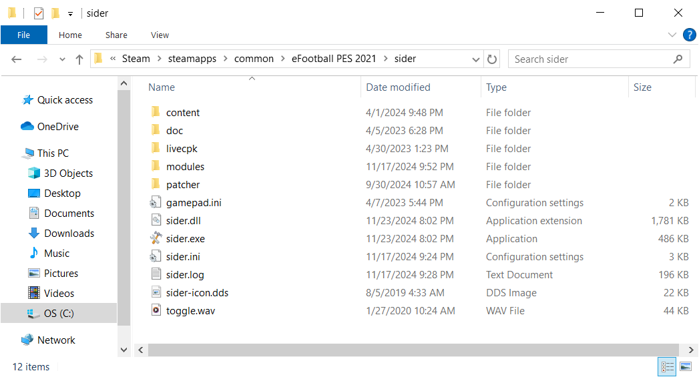

Now that you have already unpacked the sider zip archive, you will see the folder called sider inside. Move that folder inside the game directory, so that it looks like on these pictures:
This is a step that needs to only be done once. (Or if game updates and new PES2021.exe is downloaded you will need to run it again
You may want to make a copy of your PES2021.exe, just in case things go wrong, but even if you don't do that, it can typically be recovered (restored to its original state) by verifying your files in Steam
The idea is that we need to "instruct" the game to load sider.dll, which is what contains Sider engine and enables all the functionality that sider provides. This is done by running a utility program called patcher.exe, which alters the game executable in a subtle way - basically making it load sider.dll right after the game window is created
Before uninstalling, remember that you can always temporarily disable sider by renaming its directory, for example to sider.disabled or some other name like that. This way, when the game runs, it will not be able to load sider.dll and will continue without it
If you want to completely remove sider from your computer, simply delete its folder, and that is it - uninstallation complete.
Just start the game as you normally would - via Steam UI, or a shortcut on desktop. (If you successfully patched your PES2021.exe using the patcher program, the game will load sider automatically)
The very first time (or after Steam downloads a new, updated PES2021.exe), there will be a small delay between the launch of sider and the game starting - maybe 5-10 seconds, as sider needs to analyze the process and find hook places in memory. However, next time you do it, the game should start quickly (normally).
If you don't see the effects of Sider in the game, check the sider.log file (in the sider folder) - it should contain some helpful information on what went wrong.
{kind=link}
{kind=link}